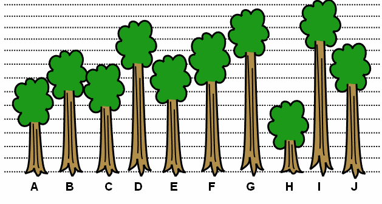
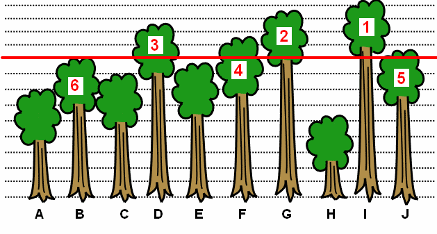

Le papa de Castor lui a demandé d'aller couper un arbre, mais il ne se souvient plus bien duquel il s'agit parmi ceux présentés ci-dessous. Il se souvient cependant qu'il s'agit du sixième (6ème) arbre le plus grand. Quel arbre doit-il couper ?

Inscrivez ci-dessous la lettre de l'arbre à couper :
Une approche possible pour trouver le 6ème arbre le plus grand, est de partir du haut, et de considérer une ligne horizontale qui descend petit à petit, en regardant quels arbres cette ligne touche en premier. Une fois que l'on a atteint le 6ème arbre le plus grand, on peut vérifier son résultat en considérant la ligne qui passe par le haut de l'arbre, et en recomptant combien d'arbres sont au dessus de cette ligne.

Comme on peut le constater sur l'illustration ci-dessus, le 6ème arbre le plus grand est l'arbre dénoté par la lettre "B".
L'approche décrite dans la solution, qui consiste à imaginer une ligne horizontale qui parcourt le plan, et à effectuer une action chaque fois que cette ligne rencontre un nouvel objet ou une extrémité d'objet, est ce que l'on appelle un algorithme de balayage. Ici il s'agit d'un balayage simple parmi les arbres, où l'on ne fait qu'augmenter un compteur chaque fois que la ligne rencontre le sommet d'un arbre.
Les algorithmes de balayage sont généralement basés sur le principe d'une ligne qui parcourt des données dans un ordre bien choisi, mais l'action effectuée à chaque rencontre d'un objet peut impliquer l'utilisation de toutes sortes de structures de données pour maintenir diverses informations au fur et à mesure de la progression de la ligne.